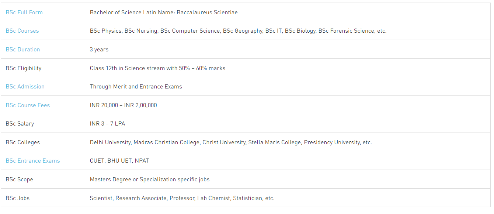
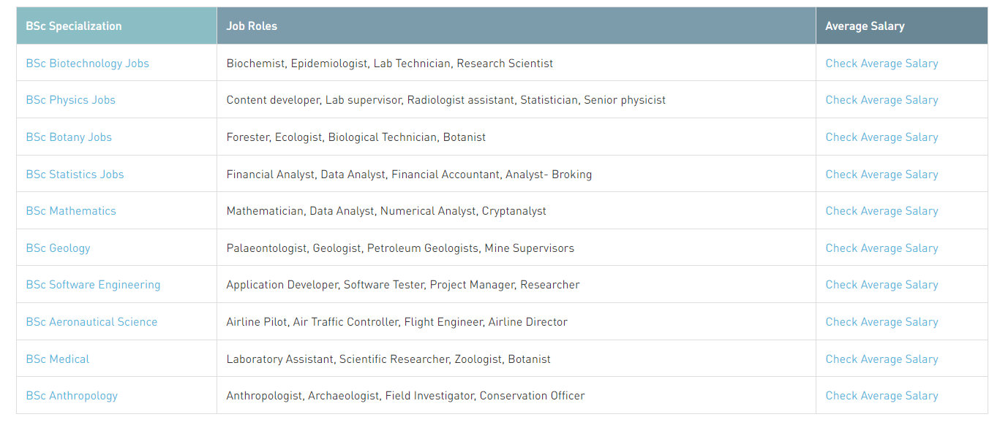

B.S.C courses
BSc or Bachelor of Science is a 3-year undergraduate academic degree offered in the Science stream. Candidates who have successfully passed their 10+2 are eligible to apply for the BSc program in top colleges in India. A BSc degree can be studied in both Honors and General courses.
BSc Course Details

BSc Jobs

Bachelor of Medicine
Bachelors of Science in Aquaculture and Pisciculture
Bachelors of Science in Bioinformatics
Bachelors of Science in Geology
Anesthesia Technology
Bachelor of Science in Biotechnology
Bachelor of Science in Advanced Zoology and Biotechnology